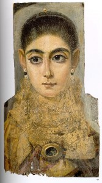

With the recent world interest in Syrian affairs growing, I decided to learn a bit about Syrian history. I'm in no position to describe or comment on the current conflict but it was interesting to see how Syria has influenced world history since the middle ages. Here are some collected excerpts from articles on the subject.
Credit: http://bit.ly/1rUqAcW
There are extraordinary portraits from Fayum, Egypt, painted in the second century which exhibit a sophistication in lighting and expression not attained until centuries later in European art. The Greeks, Romans, Egyptians, Libyans, and Syrians who lived at Fayum during the Greco-Roman period all mummified their dead. Once finished, the 'face' of the deceased, painted on linen or on a thin plank of wood, was inserted into the strips just above the mummy's head. The artists remain anonymous such as the one who painted this fascinating face, which is now in the Louvre and known as the 'European Girl'.
Source: Geza Vermes, "The First Christmas," History Today, December 2006
The Muslim Brotherhood, a precursor to Al Qaeda, had been established in Egypt in 1928 as reaction against British colonial rule. Then Gamal Abdel Nasser succeeded the British as a secular military dictator of Egypt, and the Muslim Brotherhood had continued their struggle against Nasser. At the same time, the ambitious Nasser began a long-term effort to unseat the King of Saudi Arabia by funding an insurgency, among other things. Saudi Arabia provided some support to the Muslim Brotherhood as a matter of self-defense, though that support was given uneasily, and they had no great enthusiasm for the Brotherhood's brand of fundamentalism. Due in large part to this support, one of the better secondary schools in Saudi Arabia had as one of its teachers a Muslim Brotherhood-influenced teacher--a gym teacher from Syria. In 1972, one of that school's students was ninth-grader Osama bin Laden, described by contemporaries as "extraordinarily courteous" "shy" "an honorable student" and "serious". When Osama was in the eighth or ninth grade, he was invited to join an after-school Islamic study group led by one of Al-Thaghr School's Syrian physical education teachers. In recruiting candidates for his after-school Islamic study group, this Syrian teacher appealed to five or six boys, enticing them with promises of extra credit. At first, the study group proceeded as the teacher had promised which meant sitting down, reading a few verses of the Koran and discussing how it should be interpreted. Increasingly the Syrian teacher told them stories that were really violent. One such story was about a boy who found God. He wanted to please God and he found that his father was standing in the way. The father was pulling the rug out from under him when he went to pray. Finally, the boy shot the father. During the next several years, Osama and the others in the group openly adopted the styles and convictions of teenage Islamic activists. They lectured or debated other students at Al-Thaghr about the urgent need to restore pure Islamic law across the Arab world. Saud Al-Faisal, a son of the king who became foreign minister of Saudi Arabia, complained years later that Islamist teachers from Egypt and Syria had 'misused' the hospitality offered them by preaching politics.
Source: Steve Coll, The Bin Ladens
In the aftermath of World War I, Britain carved the new country of Iraq out of the defeated Ottoman Empire to protect access to its newly discovered oil interests in Iran, and to protect transportation lanes to its imperial possessions in Asia. During the war, London had encouraged Hussein, the Sharif of Mecca, to take the lead in raising an Arab revolt against Turkey. He did this, aided by a few Englishmen, of whom the most famous was T.E. Lawrence (Lawrence of Arabia). In exchange, Hussein and his sons were to be installed as the rulers of the various constituents of the Turkish empire. Faisal, third son of Hussein, was put on the throne of the newly created nation of Syria. When control of Syria passed to France under the postwar understandings, Faisal was abruptly deposed and turned out of Damascus. But his career as a king was not yet over and he was chosen by Winston Churchil to be the crowned King of a territory of diverse groups, Shia Arabs and Sunni Arabs, Jews and Kurds and Yazidis, which we know as Iraq.
In the late 1940s and 1950s, the countries that had been the unwilling colonies and protectorates of Britain and the West began to rebel. A leading voice on this in the Middle East was Gamal Abdel Nasser of Egypt, who had seized his power in a coup, wrested control of the Suez canal away from Britain, and had grandiose plans for development in Egypt along with a vision for pan-Arab nationalism. In 1958, in a great symbol of Nasser's appeal, Syria joined Egypt to form the United Arab Republic, seemingly the first step in the realization of his dream of pan-Arabism. The apparent merger, ominously, brought together two countries which, with the Suez Canal in Egypt and the Saudi and Iraqi pipelines passing through Syria, dominated the transit routes for Middle Eastern petroleum.
Source: Daniel Yergin, The Prize
The 19th century saw a dramatic expansion of European political power into the Muslim near east, largely at the expense of the declining Ottoman Empire. Some looked to the crusades as a forerunner, especially after France took control of Syria in 1920. Paul Pic, Professor of Law at the University of Lyon, regarded Syria as 'a natural extension of France', while in 1929 Jean Longnon wrote that: 'The name of Frank has remained a symbol of nobility, courage and generosity ... and if our country has been called on to receive the protectorate of Syria, it is the result of that influence.'
Source: Jonathan Phillips, "The Call of the Crusades," History Today
The Silk Road refers to all the different overland routes leading west out of China through Central Asia to Syria and beyond and it transformed cultures both east and west. The trade that took place was mainly local and often involved exchanges of goods, rather than the use of coins. Each community, then as now, had a distinct identity. Only when wars and political unrest forced people to leave their traditional homelands did these communities along the Silk Road absorb large numbers of refugees. These immigrants brought their religions and languages to their new homes and the Christian Church of the East, based in Syria, gained influence, popularity and followings.
Source: The Silk Road: A New History, Valerie Hansen